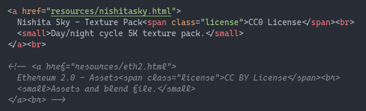
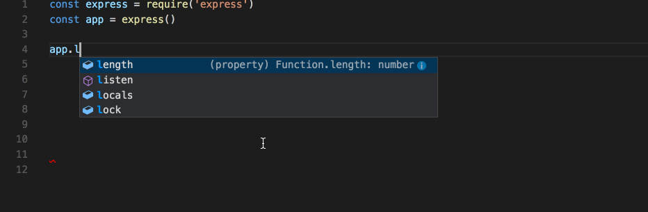
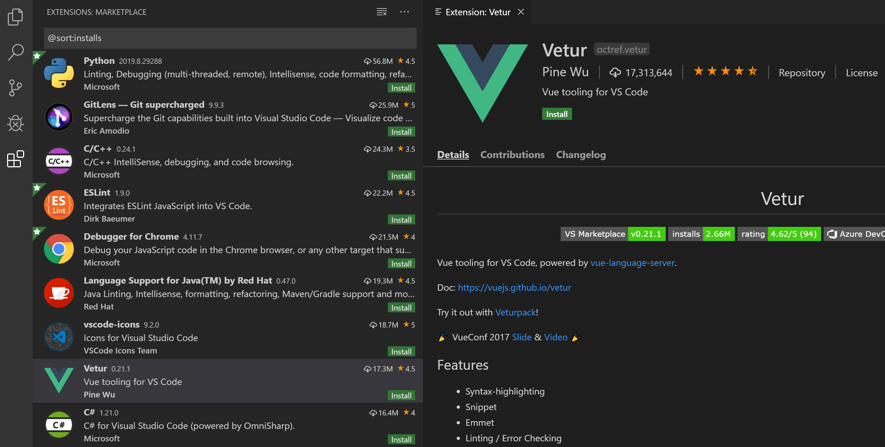

We kunnen HTML-code schrijven in kladblok, of elk ander tekst programma. Maar er zijn ook programma’s gespecialiseerd in het schrijven van code.
Deze programma’s noemt men code editors.
Wat zijn de voordelen van code editors?
Color coding

Automatisch code aanvullen
Je hoeft enkel de open tag te schrijven en de closing tag verschijnt automatisch!

IntelliSense

Error highlights

Extensions, theme’s, …

En nog veel meer!
Visual Studio Code is met reden tegenwoordig de populairste code editor.